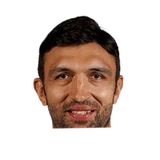

Zaza Pachulia on getting removed from the starting lineup:
“It was tough to hear when Steve (Kerr) told me about the change. But I can’t control the minutes, the position, when I’m going to play. I can only be mindful of things I can control.”

3 quotes from Zaza Pachulia about 4 other people around the NBA, newest first. Each one links to its original source.
What NBA players and coaches have said about Zaza Pachulia →
Zaza Pachulia on getting removed from the starting lineup:
“It was tough to hear when Steve (Kerr) told me about the change. But I can’t control the minutes, the position, when I’m going to play. I can only be mindful of things I can control.”
Earl K. Sneed:Zaza Pachulia:
“Basketball is temporary, but friendship is going to last forever. I'm glad to call [Dirk Nowitzki] my friend.”
“There is no question about it. The franchise has been great to me over the past eight years from the owners to the front office, coaches and of course the fans. “But I also understand the situation because the [front office] has so many things to do this summer. Danny Ferry has so much work to do. Obviously being somewhat of a new general manager here and hiring a new head coach (Mike Budenholzer). Now they have to fill out the team with players. There are so many roster spots available, so I understand the business side of it.”